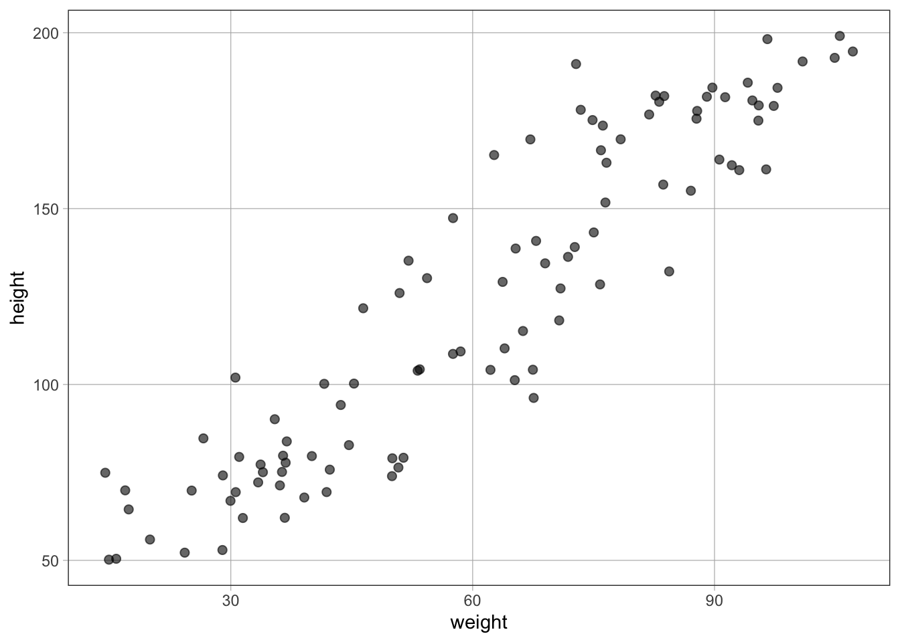

gf_dist("beta", shape1 = 9, shape2 = 3, color = "#4E9258") %>%
gf_labs(y = "p(θ | x)") %>%
gf_theme(theme_minimal())
gf_dist("beta", shape1 = 9, shape2 = 3, color = "#4E9258") %>%
gf_labs(y = "p(θ | x)") %>%
gf_theme(theme_minimal())
Regression models the probabilistic/statistical relationship between variates (\(y\)) and covariates (\(x\)).
Data (one or more tuples):
\[ (y,x) \]
Model (joint probability distribution):
\[ p(y,x \mid \theta) \]
Given the multiplication rule of probability:
\[ p(y,x \mid \theta) = p(y \mid x,\theta)p(x \mid \theta) \]
The \(p(y \mid x,\theta)\) probability distribution is the regression component of this model.
We typically assume that the covariates are independent of the model parameters (\(\theta\)), i.e., the process that generates the covariates is independent of the process that relates the variates with the covariates, therefore:
\[ p(x \mid \theta) = p(x) \]
This assumption does not always hold, e.g., in the presence of selection bias.
Therefore, under this assumption, we can rewrite the model as:
\[ p(y,x \mid \theta) = p(y \mid x,\theta)p(x) \]
Since \(p(x)\) does not depend on the model parameters, it becomes a normalizing constant.
Therefore, we can rewrite the model as:
\[ p(y,x \mid \theta) \propto p(y \mid x,\theta) \]
In other words, the joint probability distribution (i.e., the model) reduces to the regression likelihood!
The regression likelihood can take an infinite number of forms to model the probabilistic relationship between variates and covariates.
Covariates are often linked to a single effective parameter through a deterministic mapping (but it easily generalizes to multiple effective parameters):
\[ p(y \mid x, \theta) = p(y \mid \theta_1 = f(x,\beta),\theta_2) \]
In other words, the covariates affect only one of the model parameters through a deterministic function \(f(x,\beta)\).
In linear regression models, \(f(x,\beta)\) is a linear function/predictor/combination of one or more covariates (unconstrained from -Inf to Inf).
For example:
\[ f(x,\beta) = \beta_0 + \beta_1 x \]
For example, in the case of a continuous and unbounded outcome variable, the linear predictor can be linked to the mean \(\mu\) of a normal/gaussian distribution with standard deviation \(\sigma\):
\[ p(y \mid x, \theta) = \text{Normal}(\theta_1 = \mu = f(x, \beta), \theta_2 = \sigma) \]
For example:
\[ p(y \mid x, \beta_0, \beta_1, \sigma) = \text{Normal}(\mu = \beta_0 + \beta_1 x, \sigma) \]
\[ E[y \mid x, \beta_0, \beta_1, \sigma] = \mu = \beta_0 + \beta_1 x \]
\[ y \sim \text{Normal}(\mu = \beta_0 + \beta_1 x, \sigma) \]
which can also be formulated as:
\[ y = \beta_0 + \beta_1 x + \epsilon \]
\[ \epsilon \sim \text{Normal}(0, \sigma) \]
to highlight the two components (deterministic/signal + stochastic/noise) of a probabilistic/statistical model:
\[ \text{y} = \text{signal} + \text{noise} = [\beta_0 \times 1 + \beta_1 \times x] + \epsilon \]
model = lm(formula = y ~ 1 + x, data = d)In generalized linear regression models, the linear predictor \(f(x, \beta)\) is linked to a single effective parameter of the regression likelihood by the link function \(g\):
\[ p(y \mid x, \theta) = p(y \mid \theta_1 = g[f(x,\beta)],\theta_2) \]
In this context, normal linear regression models are generalized linear regression models in which the link function \(g\) is the identity function, i.e., \(g[f(x,\beta)] = f(x, \beta)\).
model = lm(formula = y ~ 1 + x, data = d)
model = glm(formula = y ~ 1 + x, family = gaussian(link = "identity"), data = d)For example, in the case of a count outcome variable, the linear predictor \(f(x, \beta)\) can be linked to the rate of occurrences \(k\) of a Poisson distribution by the (inverse of the) natural log function:
\[ \text{ln}(k) = f(x, \beta) \]
\[ k = e^{f(x,\beta)} \]
\[ p(y \mid x, \theta) = \text{Poisson}(\theta = k = e^{f(x, \beta)}) \]
For example:
\[ p(y \mid x, \beta_0, \beta_1) = \text{Poisson}(k = e^{\beta_0 + \beta_1 x}) \]
\[ E[y \mid x, \beta_0, \beta_1] = k = e^{\beta_0 + \beta_1 x} \]
\[ y \sim \text{Poisson}(k = e^{\beta_0 + \beta_1 x}) \]
model = glm(formula = y ~ 1 + x, family = poisson(link = "log"), data = d)For example, in the case of a binary outcome variable, the linear predictor \(f(x, \beta)\) can be linked to the probability of success \(\pi\) of a Bernoulli distribution by the (inverse of the) logit/log-odds function:
\[ \text{ln}(\frac{\pi}{1-\pi}) = f(x,\beta) \]
\[ \frac{\pi}{1-\pi} = e^{f(x,\beta)} \]
\[ \pi = \frac{e^{f(x,\beta)}}{1 + e^{f(x,\beta)}} = \frac{1}{1+e^{-f(x,\beta)}} \]
\[ p(y \mid x, \theta) = \text{Bernoulli}(\theta = \pi = \frac{1}{1+e^{-f(x,\beta)}}) \]
For example:
\[ p(y \mid x, \beta_0, \beta_1) = \text{Bernoulli}(\pi = \frac{1}{1+e^{-(\beta_0 + \beta_1 x)}}) \]
\[ E[y \mid x, \beta_0, \beta_1] = \pi = \frac{1}{1+e^{-(\beta_0 + \beta_1 x)}} \]
\[ y \sim \text{Bernoulli}(\pi = \frac{1}{1+e^{-(\beta_0 + \beta_1 x)}}) \]
[when \(f(x,\beta) = -\infty\) the term \(e^{-(-\infty)} = \infty\) and therefore \(p = \frac{1}{1 + \infty} = 0\). On the other hand, when \(f(x,\beta) = \infty\) the term \(e^{(-\infty)} = 0\) and therefore \(p = \frac{1}{1 + 0} = 1\)]
model = glm(formula = y ~ 1 + x, family = binomial(link = "logit"), data = d)data {
int<lower=0> N;
array[N] int<lower=0,upper=1> y;
}
parameters {
real<lower=0,upper=1> theta;
}
model {
theta ~ beta(0.5, 0.5);
y ~ bernoulli(theta);
}ex1$sample(data = list(y = c(1,0,1,1,1,0,0,0), N = 8))ex1height <- runif(100, 50, 200)
weight <- 0 + height * 0.5 + rnorm(100, 0, 10)
d <- tibble(height, weight)
gf_point(height ~ weight, data = d)
lm(height ~ weight, data = d)
Call:
lm(formula = height ~ weight, data = d)
Coefficients:
(Intercept) weight
21.22 1.68 data(Howell1)
f <- alist(
height ~ dnorm(mu, sigma),
mu <- a + b*weight,
a ~ dnorm(170,100),
b ~ dnorm(0,1),
sigma ~ dcauchy(0,2.5)
)
fit <- ulam(f, data = d, chains = 4, cores = 4)Running MCMC with 4 parallel chains, with 1 thread(s) per chain...
Chain 1 Iteration: 1 / 1000 [ 0%] (Warmup)
Chain 1 Iteration: 100 / 1000 [ 10%] (Warmup)
Chain 1 Iteration: 200 / 1000 [ 20%] (Warmup)
Chain 1 Iteration: 300 / 1000 [ 30%] (Warmup)
Chain 1 Iteration: 400 / 1000 [ 40%] (Warmup)
Chain 1 Iteration: 500 / 1000 [ 50%] (Warmup)
Chain 1 Iteration: 501 / 1000 [ 50%] (Sampling)
Chain 1 Iteration: 600 / 1000 [ 60%] (Sampling)
Chain 1 Iteration: 700 / 1000 [ 70%] (Sampling)
Chain 1 Iteration: 800 / 1000 [ 80%] (Sampling)
Chain 1 Iteration: 900 / 1000 [ 90%] (Sampling)
Chain 1 Iteration: 1000 / 1000 [100%] (Sampling) Chain 2 Rejecting initial value:Chain 2 Error evaluating the log probability at the initial value.Chain 2 Exception: normal_lpdf: Scale parameter is -0.535839, but must be positive! (in '/var/folders/mw/p6_qqf0j6dj3dsrhzbqwyt_r0000gn/T/RtmpfbsQDr/model-17c0f5f6348.stan', line 18, column 4 to column 34)
Chain 2 Exception: normal_lpdf: Scale parameter is -0.535839, but must be positive! (in '/var/folders/mw/p6_qqf0j6dj3dsrhzbqwyt_r0000gn/T/RtmpfbsQDr/model-17c0f5f6348.stan', line 18, column 4 to column 34)Chain 2 Rejecting initial value:Chain 2 Error evaluating the log probability at the initial value.Chain 2 Exception: normal_lpdf: Scale parameter is -1.12288, but must be positive! (in '/var/folders/mw/p6_qqf0j6dj3dsrhzbqwyt_r0000gn/T/RtmpfbsQDr/model-17c0f5f6348.stan', line 18, column 4 to column 34)
Chain 2 Exception: normal_lpdf: Scale parameter is -1.12288, but must be positive! (in '/var/folders/mw/p6_qqf0j6dj3dsrhzbqwyt_r0000gn/T/RtmpfbsQDr/model-17c0f5f6348.stan', line 18, column 4 to column 34)Chain 2 Rejecting initial value:Chain 2 Error evaluating the log probability at the initial value.Chain 2 Exception: normal_lpdf: Scale parameter is -1.19378, but must be positive! (in '/var/folders/mw/p6_qqf0j6dj3dsrhzbqwyt_r0000gn/T/RtmpfbsQDr/model-17c0f5f6348.stan', line 18, column 4 to column 34)
Chain 2 Exception: normal_lpdf: Scale parameter is -1.19378, but must be positive! (in '/var/folders/mw/p6_qqf0j6dj3dsrhzbqwyt_r0000gn/T/RtmpfbsQDr/model-17c0f5f6348.stan', line 18, column 4 to column 34)Chain 2 Rejecting initial value:Chain 2 Error evaluating the log probability at the initial value.Chain 2 Exception: normal_lpdf: Scale parameter is -1.66524, but must be positive! (in '/var/folders/mw/p6_qqf0j6dj3dsrhzbqwyt_r0000gn/T/RtmpfbsQDr/model-17c0f5f6348.stan', line 18, column 4 to column 34)
Chain 2 Exception: normal_lpdf: Scale parameter is -1.66524, but must be positive! (in '/var/folders/mw/p6_qqf0j6dj3dsrhzbqwyt_r0000gn/T/RtmpfbsQDr/model-17c0f5f6348.stan', line 18, column 4 to column 34)Chain 2 Rejecting initial value:Chain 2 Error evaluating the log probability at the initial value.Chain 2 Exception: normal_lpdf: Scale parameter is -0.384446, but must be positive! (in '/var/folders/mw/p6_qqf0j6dj3dsrhzbqwyt_r0000gn/T/RtmpfbsQDr/model-17c0f5f6348.stan', line 18, column 4 to column 34)
Chain 2 Exception: normal_lpdf: Scale parameter is -0.384446, but must be positive! (in '/var/folders/mw/p6_qqf0j6dj3dsrhzbqwyt_r0000gn/T/RtmpfbsQDr/model-17c0f5f6348.stan', line 18, column 4 to column 34)Chain 2 Iteration: 1 / 1000 [ 0%] (Warmup)
Chain 2 Iteration: 100 / 1000 [ 10%] (Warmup)
Chain 2 Iteration: 200 / 1000 [ 20%] (Warmup)
Chain 2 Iteration: 300 / 1000 [ 30%] (Warmup)
Chain 2 Iteration: 400 / 1000 [ 40%] (Warmup)
Chain 2 Iteration: 500 / 1000 [ 50%] (Warmup)
Chain 2 Iteration: 501 / 1000 [ 50%] (Sampling)
Chain 2 Iteration: 600 / 1000 [ 60%] (Sampling)
Chain 2 Iteration: 700 / 1000 [ 70%] (Sampling)
Chain 2 Iteration: 800 / 1000 [ 80%] (Sampling)
Chain 2 Iteration: 900 / 1000 [ 90%] (Sampling)
Chain 2 Iteration: 1000 / 1000 [100%] (Sampling)
Chain 3 Iteration: 1 / 1000 [ 0%] (Warmup)
Chain 3 Iteration: 100 / 1000 [ 10%] (Warmup)
Chain 3 Iteration: 200 / 1000 [ 20%] (Warmup)
Chain 3 Iteration: 300 / 1000 [ 30%] (Warmup)
Chain 3 Iteration: 400 / 1000 [ 40%] (Warmup)
Chain 3 Iteration: 500 / 1000 [ 50%] (Warmup)
Chain 3 Iteration: 501 / 1000 [ 50%] (Sampling)
Chain 3 Iteration: 600 / 1000 [ 60%] (Sampling)
Chain 3 Iteration: 700 / 1000 [ 70%] (Sampling)
Chain 3 Iteration: 800 / 1000 [ 80%] (Sampling)
Chain 3 Iteration: 900 / 1000 [ 90%] (Sampling)
Chain 3 Iteration: 1000 / 1000 [100%] (Sampling)
Chain 4 Iteration: 1 / 1000 [ 0%] (Warmup)
Chain 4 Iteration: 100 / 1000 [ 10%] (Warmup)
Chain 4 Iteration: 200 / 1000 [ 20%] (Warmup)
Chain 4 Iteration: 300 / 1000 [ 30%] (Warmup)
Chain 4 Iteration: 400 / 1000 [ 40%] (Warmup)
Chain 4 Iteration: 500 / 1000 [ 50%] (Warmup)
Chain 4 Iteration: 501 / 1000 [ 50%] (Sampling)
Chain 4 Iteration: 600 / 1000 [ 60%] (Sampling)
Chain 4 Iteration: 700 / 1000 [ 70%] (Sampling)
Chain 4 Iteration: 800 / 1000 [ 80%] (Sampling)
Chain 4 Iteration: 900 / 1000 [ 90%] (Sampling)
Chain 4 Iteration: 1000 / 1000 [100%] (Sampling)
Chain 1 finished in 0.0 seconds.
Chain 2 finished in 0.1 seconds.
Chain 3 finished in 0.1 seconds.
Chain 4 finished in 0.1 seconds.
All 4 chains finished successfully.
Mean chain execution time: 0.1 seconds.
Total execution time: 0.2 seconds.precis(fit)A Bayesian model is specified by the likelihood model (also called observational model) and prior model. This can be expressed as the joint probability density of the data, \(x\), and model parameters, \(\theta\), such that:
\[ p(x, \theta) = p(\theta) \cdot p(x \mid \theta) \]
We perform inference by conditioning on the data and calculating expectation values of the resulting posterior distribution. Recalling Bayes’ theorem:
\[ p(\theta \mid x) = \frac{p(\theta) \cdot p(x \mid \theta)}{p(x)} \propto p(x, \theta) \]
We note that the results of our inference are completely dependent on the assumed model. Bayes’ theorem is not some magical guarantee, and if our model does not represent the actual data generating process our inference will yield results that are meaningless in practice. Even worse, if we are not careful, a misspecified model may produce results that “look good” but are far from the truth - leading us to draw the wrong conclusions from our analysis.
Our workflow begins with building our first sensible model as a starting point, that we can later check and iterate upon to make sure our inferences are useful. The first model doesn’t need to be perfect, and in fact should be as simple as possible while still including the scientific phenomenon of interest. This process is what we will focus on here.
So, model building is very important, but where to start? It can be helpful to break down the problem into the following components:
Scientific question
Data
Parameter(s) of interest
Key nuisance parameter(s)
Relevant domain expertise
The model-building problem then comes down to defining a connection between your parameters and data (the likelihood/observational model) and incorporating relevant domain expertise (the prior model).
To get a feel for how this can work, consider the following examples:
When starting the model-building process, it can also be helpful to think about the ideal model that you would fit if you had no restrictions on model complexity or computational resources. The purpose of this is to consider each step of the data generating process in detail, from start to finish. We are forced to think about complexities of the physical system and measurement process that may or may not be important for our later inference. The model itself may be impossible to actually write down or implement, but in doing this, we give can identify important steps and give context to the simpler models we will later go on to create.
For both of the above steps, it can be useful to sketch out connections between data and parameters using directed acyclic graphs (DAGs), often also called probabilistic graphical models (PGMs). These can be thought of as a visualisation of the data generating process, with parameters in unshaded circles, data or observations in shaded circles, and the arrows representing the connections between them.
Here is a trivial example for that of data sampled from a normal distribution, such as what we looked at when introducing Stan in the Are you ready? section of the introduction notebook. The normal distribution is defined by two parameters, \(\mu\) and \(\sigma\). \(N\) independent samples from this distribution are then taken, shown by \(x_i\). The box around \(x_i\) shows that there are a number of repeated samples, that we can think of as observations or measurements.
XXX